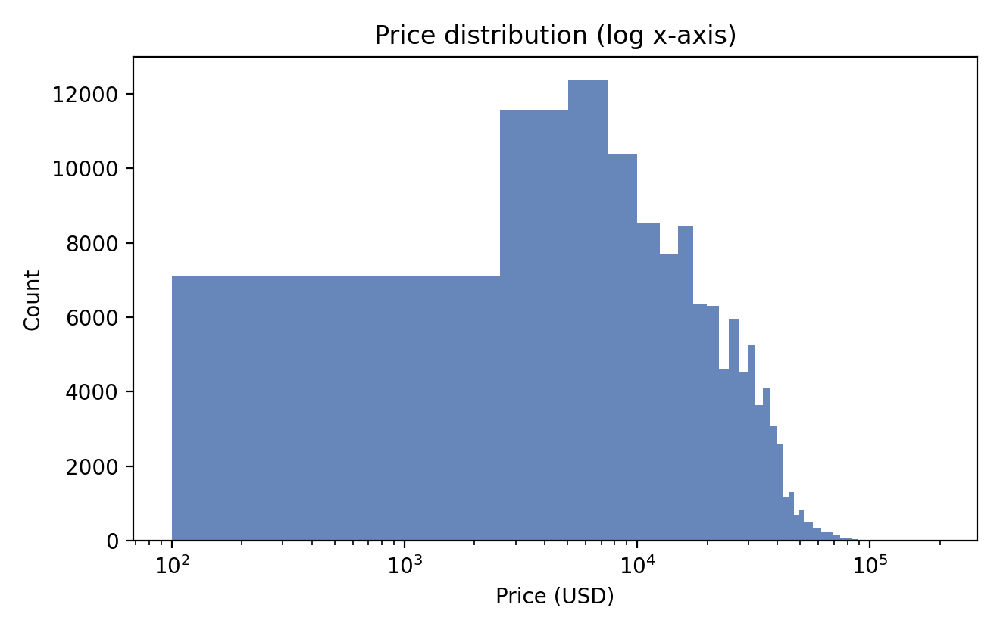
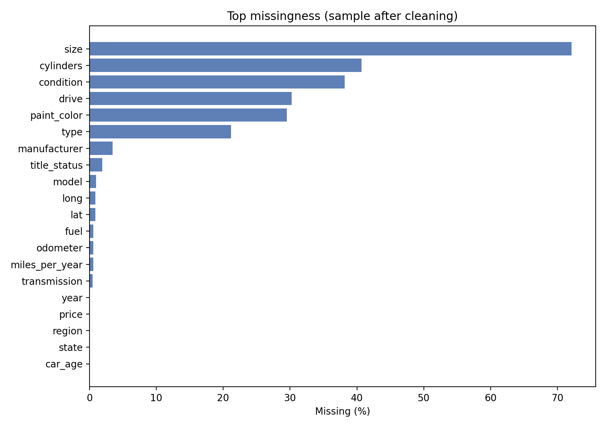
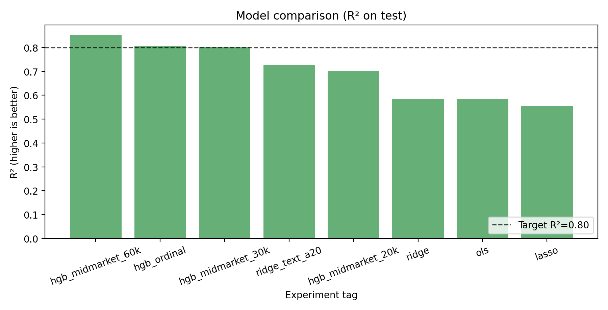
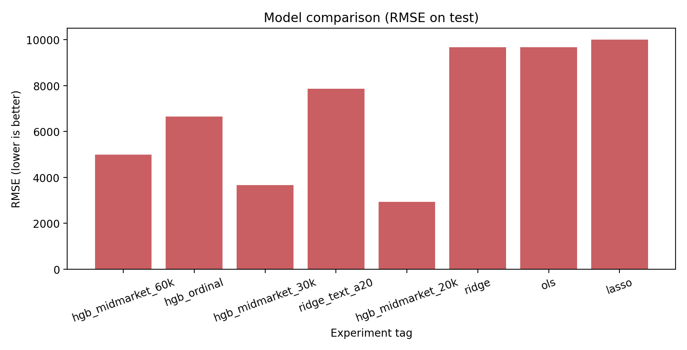
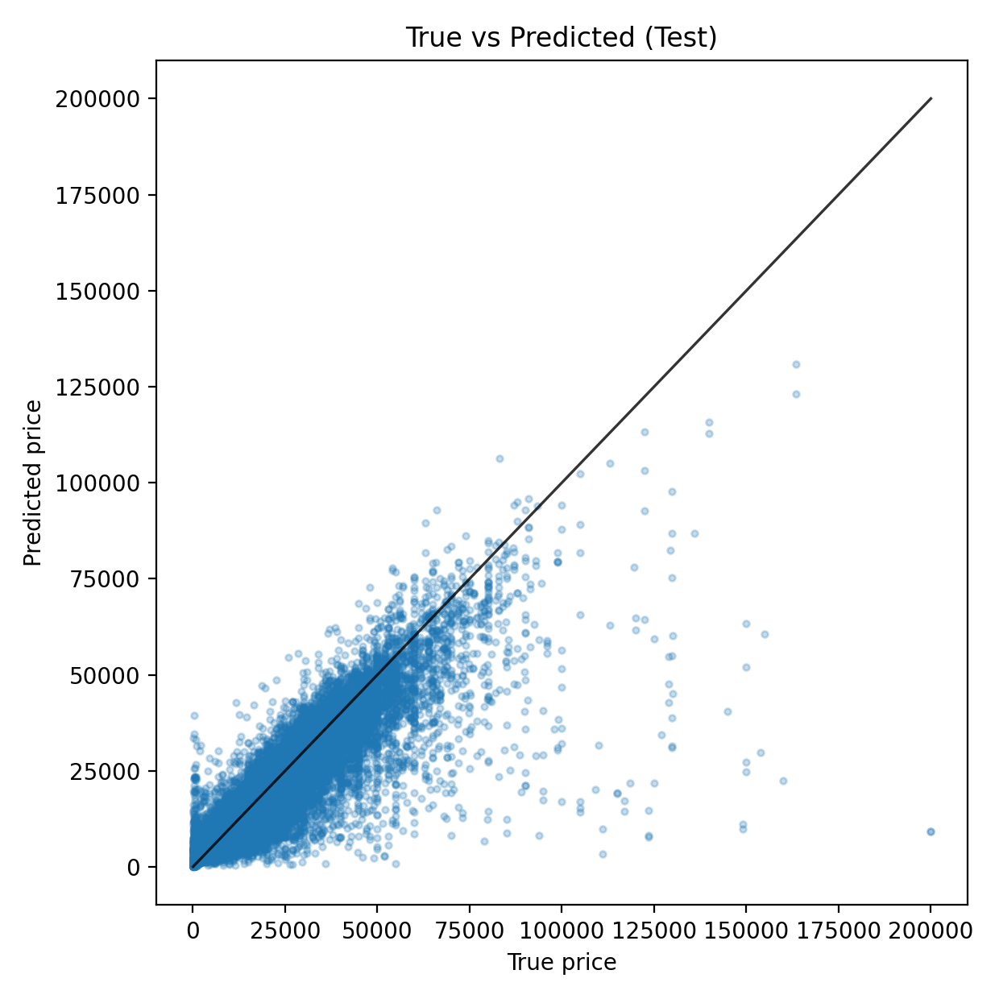

From Regression Baselines to Deployment-Facing Diagnostics
This project predicts Craigslist used-car prices with a reproducible pipeline: data cleaning, feature engineering,
baseline and nonlinear models, error diagnostics, and an interactive demo path. The extension in this site adds
subgroup- and decile-level behavior analysis to make model performance more deployment-relevant.
Best Broad-Domain R²
0.8061
HistGradientBoostingRegressor (`hgb_ordinal`)
Best Broad-Domain RMSE
$6,649
Held-out test split, 80/20 with seed 441
Extension Figures Added
6
Subgroup/decile diagnostics in `results/advanced/`
Problem / Data
Heavy-tailed target, missingness, and market heterogeneity
Why the problem is hard
Used-car prices are highly right-skewed and segment-dependent. A single RMSE number can hide meaningful error
differences across price ranges and subgroups. This motivates both nonlinear modeling and richer diagnostics.
426,880 raw rowsCraigslist datasetLeakage-aware split
End-to-end pipeline from cleaned dataset to exported figures and demo app.

Price distribution is heavy-tailed, motivating log-target training.

Several categorical columns are sparse, requiring robust imputation.
Modeling
Comparative modeling and a strong nonlinear baseline
The repository keeps linear baselines (OLS/Ridge/Lasso), text-augmented Ridge, and boosted trees in one consistent
pipeline. The nonlinear model leads on broad-domain fit while preserving reproducibility and exportability.

Boosted trees achieve the strongest broad-domain R².

RMSE trade-offs vary with price-domain coverage.
Compact leaderboard
Model
R²
RMSE
Reading
HistGradientBoosting
0.8061
6649
Best broad-domain fit
Ridge + TF-IDF
0.7275
7866
Useful text baseline
Ridge
0.5835
9666
Interpretable linear floor
Lasso
0.5540
10003
Sparser but weaker fit
Why the upgrade matters
The original repository already identified a strong nonlinear regressor. This upgraded site adds the missing
second layer: where the model is reliable, where error scales up, and how the same predictor should be read
differently across price ranges and subgroups.
That makes the project look more like a deployable analytics system and less like a single leaderboard snapshot.
GitHub-friendly Demo
How to use this site (precomputed static flow)
GitHub Pages cannot run live model inference directly, so this section provides precomputed example scenarios that
mimic the Streamlit workflow: choose a case, load, inspect estimate and uncertainty note.
1
Pick a listing type
Choose a commuter car, a diesel utility pickup, or an older low-price listing.
2
Load the precomputed result
The site simulates a short inference delay, then reveals the fixed model output.
3
Read price plus range
Use both the point estimate and the uncertainty band instead of reading a single dollar value.
4
Check segment risk
Use the diagnostics page to decide whether that scenario sits in a harder subgroup or price band.
Preparing static scenario ...
Scenario
$--
Estimated range: --
Uncertainty note: --
Original interactive Streamlit interface in this repository.

Best broad-domain run still shows larger variance on the high-price tail.
Advanced Extension
Subgroup and decile diagnostics added in this upgrade
The extension adds diagnostics beyond aggregate metrics: subgroup MAE, decile error profiles, calibration-style views,
and age-bucket behavior. These plots are available in detail on the Results page.
Decile drift is explicit
Error is not uniform across the market. High-price listings show much larger absolute-dollar miss even when the
overall fit remains strong.
Subgroups are uneven
Condition, fuel type, and vehicle age each shift error behavior. The upgrade makes those segment effects visible
instead of hiding them inside one MAE.
Deployment reading changes
The practical recommendation is to show prediction + segment context together. That is the main value added by
this upgraded companion site.